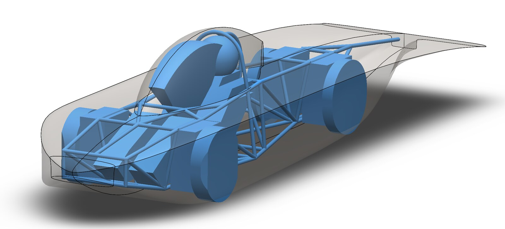
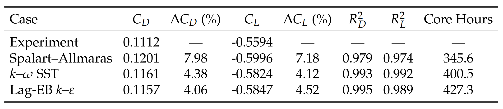

Simulation Setup
The design features a parametric aerodynamic surface, which allows the geometry to be updated directly through the code.
The STAR-CCM+ RANS simulation was run at 23 m/s, and incorporated a moving ground, rotating wheels, and a near-wall resolution of y⁺ < 1.

Blockage and mesh resolution effects were verified through mesh and domain sensitivity studies.
Wind tunnel data was used to benchmark turbulence models, with k–ω SST providing the best balance of accuracy and computational cost.

Pipeline Setup
The project utilises Meta's Ax platform to drive the Bayesian optimisation. The objective function targets daily mission energy by balancing solar area collection against aerodynamic and rolling resistance losses.
A custom Python orchestration system links the workflow to the Iridis 6 HPC cluster. This setup manages the job states autonomously so that simulations can seamlessly run, pause, and resume.

Pipeline Validation
A Pareto front study on a low-aspect wing was conducted to validate the framework robustness and optimisation implementation.